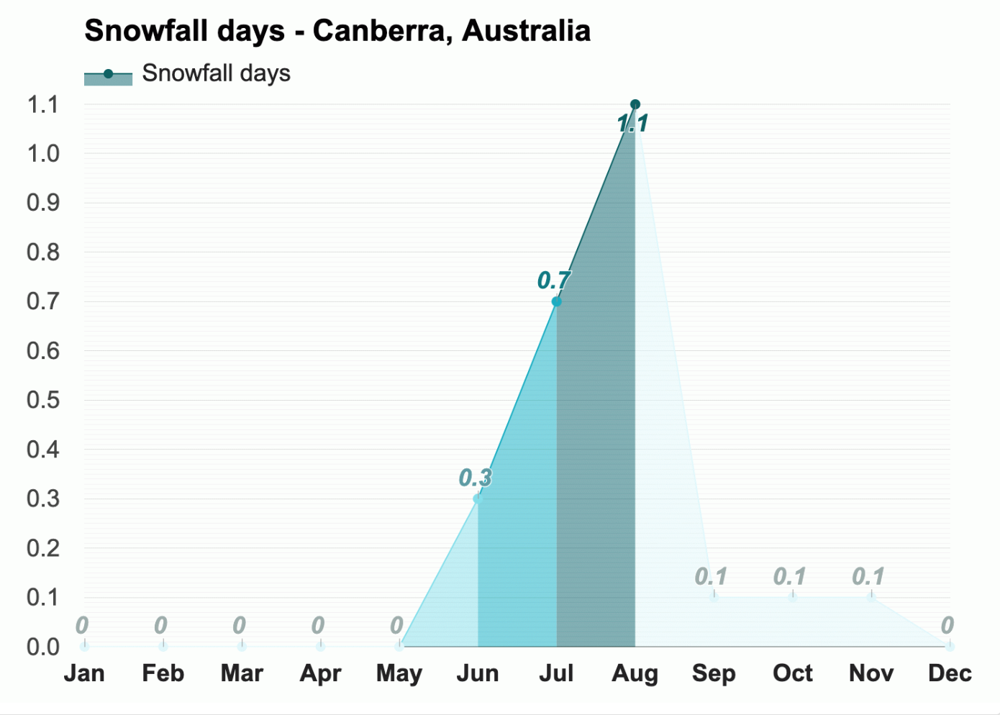

Temperature 
The warmest month in Canberra is January, with an average
high-temperature of 28.2°C (82.8°F) and an average low-temperature
of 14°C (57.2°F).
With an average high-temperature of 10.3°C (50.5°F) and an average
low-temperature of 1.3°C (34.3°F), July is the coldest month in
Canberra.
The month with the most sunshine in Canberra, Australia, is
December, with an average of 10.9h of sunshine. June has the least
sunshine of the year, with an average of 6.1h of sunshine.
Rain
Throughout the year, in Canberra, there are 129.1 rainfall days, and
392mm (15.43") of precipitation is accumulated.
With an average relative humidity of 85%, June is the most humid
month in Canberra, Australia. December is the month with the most
rainfall. Rain falls for 12.2 days and accumulates 45mm (1.77") of
precipitation.
The least humid month is January, with an average relative humidity
of 63%. The month with the least rainfall in Canberra is May, when
the rain falls for 7.6 days and typically collects 20mm (0.79") of
precipitation.
Wind
Snow
In Canberra, Australia, during the entire year, snow aggregates up
to 20mm (0.79"). Months with snowfall are June through
October.January through May, November and December are months
without snowfall.
September is the month with the most snowfall in Canberra. Snow
falls for 0.1 days and accumulates 11mm (0.43") of snow.

* The above information is sourced from Weather-At. Take a
visit for
more information...
Population 467,000 (Metro)
Median Age 37
Ancestry
The most common ancestries in Canberra were English 24.9%,
Australian 23.6%, Irish 9.8%, Scottish 7.6% and German 3.3%.
Country of birth
In Canberra, 69.6% of people were born in Australia. The most
common countries of birth were England 3.6%, India 2.2%, China
(excludes SARs and Taiwan) 1.8%, New Zealand 1.4% and Philippines
0.9%.
Religion
In Canberra, Christianity was the largest religious group reported
overall (53.1%).
The most common responses for religion in Canberra were No
Religion, so described 35.1%, Catholic 23.8%, Anglican 11.9%, Not
stated 9.6% and Uniting Church 2.5%.
* The above information is sourced from
Australian Bureau of Statitics. Take a visit for
more information...
Skate and BMX
Over the last 20 years there has been a significant growth in the
interest and participation of action sports such as skateboarding
and BMX.
Albury Skate Park
Thurgoona Skate Park
Springdale Heights Pump Track
Boat ramps
There are five boat ramps in the Albury region, with access to
either the Murray River or Lake Hume. All ramps offer easy access to
the water as well as nearby services.
Lake Hume Village Boat Ramp
Kremur Street
Mungabareena Reserve
Walking and cycling trails
Albury has more than 50 kilometres of interlinked on and off-road
trails, offering walkers and cyclists of all ages, safe and
enjoyable access to our natural environment and places of interest.
Heritage Walk
Nail Can Hill / Ridge Trail
Bungambrawatha Creek Trail
Rainforest Walk
* The above information is sourced from
Albury City Government. Take a visit for
more information...